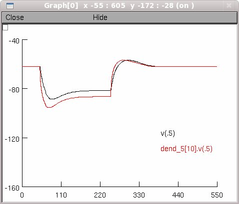
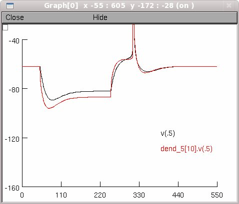
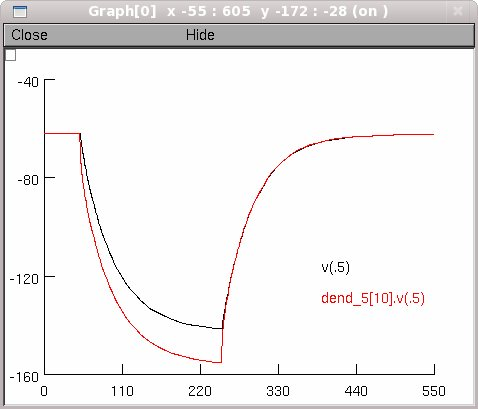

NEURON mod files from the paper: Local Control of Post-Inhibitory Rebound Spiking in CA1 Pyramidal Neuron Dendrites Giorgio A. Ascoli, Sonia Gasparini, Virginia Medinilla, Michele Migliore, J.Neurosci. in press, 2010. The simulation file rebound.hoc reproduces the simulations shown in Fig. 2d of the paper. Questions on how to use this model should be directed to michele.migliore@pa.ibf.cnr.it Usage: Auto-launch from ModelDB or download and extract this archive and then compile the mod files. Start under windows by double-clicking the mosinit.hoc file, under linux/unix by typing "nrngui mosinit.hoc", and under mac OS X by dragging and dropping mosinit.hoc on the nrngui icon. Once the simulation is started press the buttons to run the model under the different conditions shown in figure 2d: Control:  4-AP:  4-AP + ZD: 